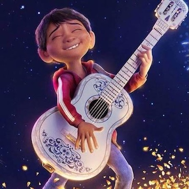
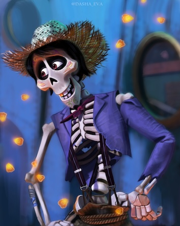
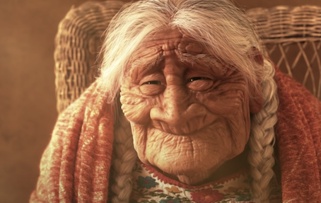

Miguel
Miguel is an energetic and determined 12-year-old Mexican boy who dreams of becoming an accomplished musician like his idol, Ernesto de la Cruz. Despite his family's strict generations-old ban on music, Miguel's passionate love for the guitar drives him to pursue his talent in secret. His desperate attempt to participate in a Day of the Dead talent show accidentally transports him to the vibrant Land of the Dead, initiating an unforgettable journey to discover his family's true history.

Hector
Héctor is a charmingly quirky, down-on-his-luck spirit in the Land of the Dead who desperately seeks to visit the world of the living before he is completely forgotten. Dressed in tattered clothes, he agrees to help Miguel find Ernesto de la Cruz in exchange for Miguel putting his photo on an ofrenda. Beneath his comedic, fast-talking demeanor lies a deeply loving and soulful father whose past holds the key to uncovering the truth behind the Rivera family's tragic mystery.

Mama Coco
Mamá Coco is Miguel's beloved, warm-hearted great-grandmother and the gentle heart of the Rivera family. Though advanced in age and quietly slipping into memory loss, she shares a profound emotional connection with Miguel. Her fading memories of her father hold the central secret of the story. As the living bridge between the past and present, her cherished connection to music ultimately serves as the key to restoring love, healing old wounds, and reuniting her entire family across generations.